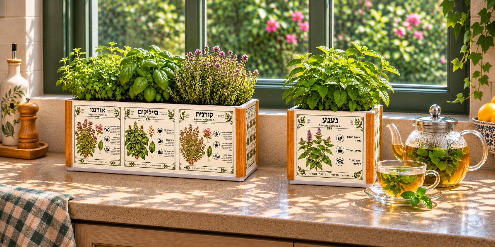
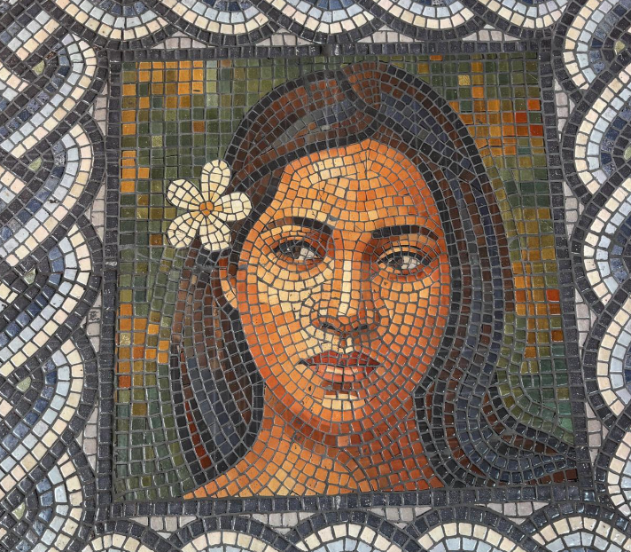
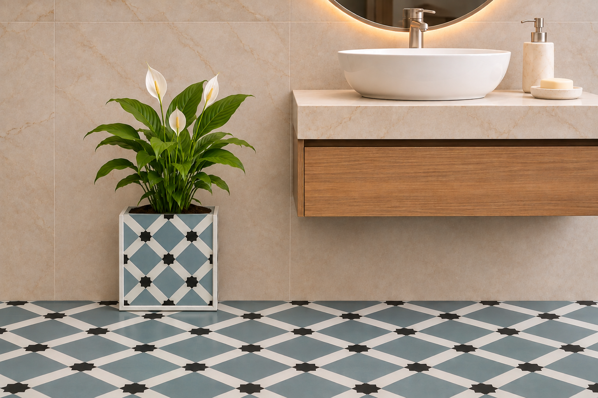
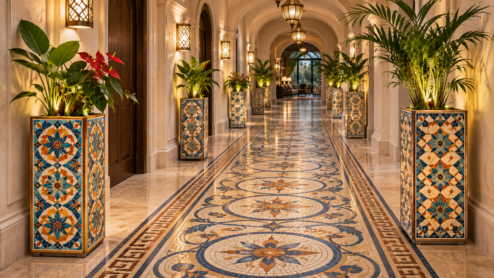

Herb pots
Small hand-tiled planters for basil, thyme, oregano, za'atar, mint, sage, lemon balm, white micromeria, chives, rosemary, parsley and coriander. Each one is covered in ceramic tiles and sealed for outdoor use, so your herbs stay fresh by the kitchen window or on the balcony.
Ask about it→
Custom mosaics
Our own new technique: ceramic tiles that look like a hand-laid mosaic, with seamless joints between them. They work on flat surfaces and on uneven ones too, so your design flows across walls, floors and curves without a break.
Ask about it→
Floor tile pots
A planter that matches your floor exactly. Have spare tiles? We build the pot from them. No spares left? We print your floor's pattern onto new tiles with a perfect match. Either way, the pot looks like part of the room.
Ask about it→
Custom designs
Interior designers, architects and artists: bring us your concept and we produce the ceramic elements for your project. Custom planters and decorative pieces made to your design, colours and sizes.
Ask about it→